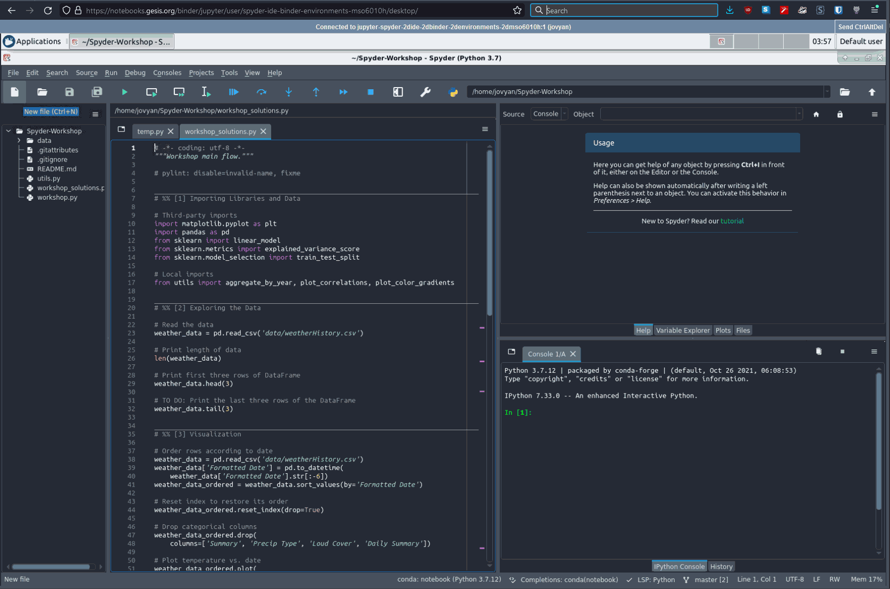
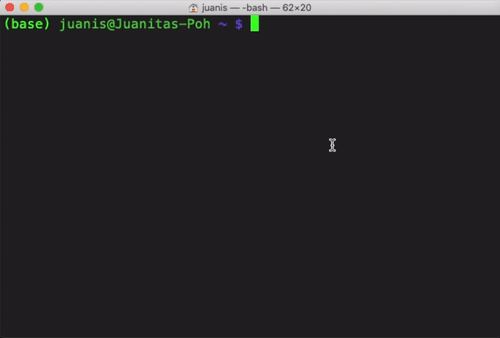
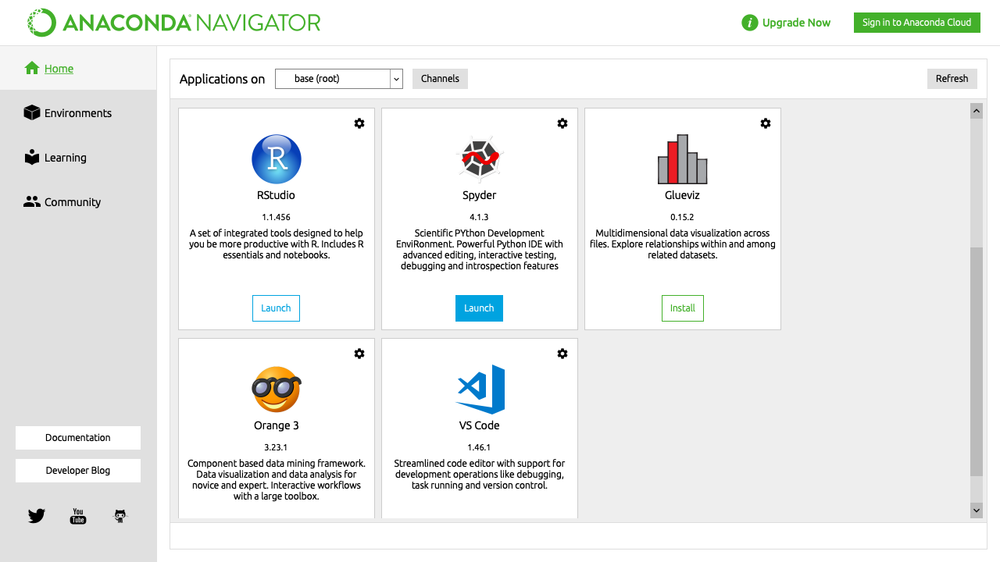

Guía de instalación#
Spyder es relativamente fácil de instalar en Windows, Linux y macOS. Solo asegúrate de leer y seguir estas instrucciones con cuidado.
Si tienes problemas antes de publicar un informe por favor consulta nuestra guía completa guía de solución de problemas y busca en el seguimiento de incidencias tu mensaje de error y descripción de problema. Estos métodos generalmente arreglan o aislan la gran mayoría de las dificultades relacionadas con la instalación. ¡Gracias!
Nota
Para la mayoría de los usuarios en Windows y macOS, recomendamos nuestra Instaladores independientes como la opción más sencilla y robusta para obtener Spyder. Para los usuarios que necesitan soporte para Linux, plugins Spyder de terceros o compatibilidad con Variable Explorer con paquetes instalados a medida, todas las capacidades que los instaladores independientes aún no proporcionan, recomendamos usar Distribuciones basadas en Conda. Linux, plugin y soporte de gestión de paquetes/entorno en los instaladores independientes están actualmente en activo desarrollo para las futuras versiones de Spyder.
Probar Spyder en línea#
¿Quieres probar Spyder sin instalarlo? Con Binder puedes trabajar con una copia completamente funcional de Spyder online que se ejecuta directamente en tu navegador web, sin necesidad de instalación. Visita el Spyder Binder para comenzar a usar Spyder.
Instaladores independientes#
Los instaladores independientes son nuestro método recomendado para la mayoría de los usuarios en Windows y macOS, con soporte experimental para Linux bajo activo desarrollo. Estos funcionan como cualquier otro IDE, donde Spyder puede ser instalado y actualizado independientemente de los entornos Python que utilices para ejecutar tu código. Esto evita los problemas con paquetes incompatibles e instalaciones rotas que los usuarios suelen enfrentar cuando mezclan Spyder con los entornos (Conda, etc) que usan para ejecutar su código.
Los instaladores incluyen un entorno Python integrado con las librerías científicas más comunes (NumPy, Pandas, Matpotlib, etc), que se puede utilizar de forma automática para las tareas básicas de análisis de datos. Sin embargo, para gestionar tus propios paquetes y entornos, actualmente necesitarás conectar una distribución externa de Python (como Anaconda, Miniconda, Miniforge/Mambaforge, WinPython o Python.org) a tu copia independiente de Spyder. Para más información sobre esto, ve nuestra entrada FAQ sobre el asunto.
Nota
Los instaladores independientes todavía no soportan la instalación de complementos Spyder de terceros que no están ya empaquetados con ellos, aunque esta característica está actualmente en desarrollo. Por ahora, si necesitas esta capacidad, recomendamos un Distribuciones basadas en Conda.
Descargar e instalar#
Para descargar el instalador Spyder soportado para tu plataforma, simplemente haz clic en el enlace apropiado de abajo (para Linux, consulta la sección Distribuciones basadas en Conda). Luego, haz doble clic en el archivo descargado para abrir el instalador. Si aparece una advertencia de seguridad, puede que necesites hacer clic en Sí, OK, Abrir, Permitir o similares.
En Windows, si aparece un diálogo «SmartScreen», haz clic en Más información seguido por Ejecutar de todos modos, y luego procede a través de los pasos del instalador.
En macOS, abre la imagen del disco y arrastra Spyder a tu carpeta de Aplicaciones.
Nota
Las versiones «Lite» de ambos instaladores también están disponibles en releases page, que son algo más pequeñas que los instaladores completos. Estas carecen de un número de dependencias opcionales pero recomendadas, como NumPy, SciPy y Pandas, lo que significa que algunas características de Explorador de variables, incluyendo asistentes gráficos de importación de datos y soporte para la visualización y edición enriquecida de matrices NumPy y Pandas DataFrames, no estarán disponibles. Dado que esto solo ahorra una modesta cantidad de espacio mientras se pierden características significativas, recomendamos usar los instaladores completos a menos que minimizar el tamaño de descarga/instalación y el uso de memoria sea una prioridad.
Ejecutar desde una instalación independiente#
Para ejecutar Spyder cuando se instala de forma autónoma, simplemente puedes utilizar el método típico de tu sistema operativo para iniciar aplicaciones, tal como abrirlo desde el menú Inicio en Windows (o la barra de tareas, si lo has anclado ahí), o desde Launchpad, Spotlight o la carpeta Aplicaciones en macOS (o el Dock, si lo has añadido allí).
Actualizar una instalación independiente#
Por defecto, Spyder comprueba las actualizaciones automáticamente al iniciar, y también puede comprobar manualmente con . Los instaladores autónomos para Spyder 5.4.0+ incluyen la funcionalidad de actualización incorporada directamente en Spyder, que después de comprobar si hay actualizaciones, mostrará un mensaje para descargar e instalar automáticamente la versión actual. En versiones anteriores, necesitarás descargar e instalar manualmente la última versión (en Windows, asegúrate de eliminar la versión antigua primero en la Configuración del Panel de Control/Sistema).
Distribuciones basadas en Conda#
Spyder se incluye por defecto en la distribución Anaconda de Python, que viene con todo lo que necesitas para empezar con un paquete todo en uno. También puede instalarse fácilmente en el mucho más ligero Miniconda y Miniforge/Mambaforge, que solamente incluyen Python y el paquete y gestor de entorno Conda/Mamba por defecto (con Miniforge por defecto en el canal Conda-Forge, y Mambaforge utilizando Mamba, una alternativa mucho más rápida a Conda). Este es nuestro método de instalación recomendado en Linux y para usuarios con plugins Spyder de terceros, ya que el soporte para ambos en nuestros instaladores independientes todavía está en proceso de desarrollo.
Entorno Conda#
Con Miniconda/Miniforge/Mambaforge, o para obtener una versión más fiable y actualizada de Spyder con Anaconda, te recomendamos encarecidamente instalar Spyder en tu propio entorno Conda.
Nota
Si usas Mamba/Mambaforge, sustituye mamba por conda en los siguientes comandos.
Instalar con Conda#
Para una instalación completa de Spyder y todas las dependencias opcionales, ejecuta el siguiente comando en tu Anaconda Prompt (Windows) o terminal:
conda create -c conda-forge -n spyder-env spyder numpy scipy pandas matplotlib sympy cython
Para una instalación mínima sin la funcionalidad opcional y la integración con los paquetes anteriores, puedes ejecutar:
conda create -c conda-forge -n spyder-env spyder
Esto instala Spyder en un nuevo ambiente llamado spyder-env, usando el canal Conda-Forge más actualizado, ejecutado por la comunidad. Para asegurarse de que futuras instalaciones/actualizaciones en este entorno también utilizan Conda-Forge y que sean más rápidas y confiables, asegúrate de establecerlo como el canal predeterminado de tu entorno con la prioridad estricta de canal activada, si este no es el caso (como lo es con Miniforge/Mambaforge o si lo has configurado manualmente):
conda activate spyder-env
conda config --env --add channels conda-forge
conda config --env --set channel_priority strict
Aquí tienes un resumen de los pasos principales.
Ejecutar con Conda#
Luego puedes ejecutar Spyder por los mismos métodos que con Anaconda, excepto que necesitas asegurarte de iniciar el acceso directo del menú Inicio con (spyder-env) en el nombre, selecciona el entorno spyder-env a la izquierda antes de lanzarlo con Navigator, o escribe conda activate spyder-env antes de lanzarlo en la línea de comandos.
Ve a nuestras preguntas frecuentes FAQ para más información sobre cómo usar Spyder con sus entornos Conda existentes.
Ejecutar con Conda#
Con cualquier distribución basada en Conda y Spyder instalados en su propio entorno (recomendado), actualiza Conda en sí mismo, activa el entorno y finalmente actualiza Spyder. En tu terminal del sistema, o en el Anaconda Prompt si estás en Windows, ejecuta:
conda update -n base conda
conda activate spyder-env
conda update spyder
En caso de que se produzca un error al intentar actualizar, simplemente elimina el entorno existente (si se utiliza otro que no sea base):
conda remove -n spyder-env --all
Y luego recrea uno nuevo.
Anaconda base#
Aunque recomendamos utilizar siempre un entorno dedicado, con Anaconda también puede ejecutar la copia empaquetada de Spyder desde el entorno base incorporado.
Prudencia
La versión empaquetada de Spyder a menudo puede estar bastante desactualizada, faltando nuevas características y correcciones de errores que están en la última versión, y si instalas, cambias o eliminar otros paquetes, hay una gran probabilidad de conflictos de dependencias o de una instalación rota de Spyder. Por lo tanto, recomendamos que instales Spyder en un nuevo entorno Conda para evitar todos estos problemas.
Ejecutar con Anaconda#
Para ejecutar la versión empaquetada de Spyder después de instalarla con Anaconda, el método recomendado en Windows es lanzarlo a través del acceso directo al menú Inicio. En otras plataformas, abre Anaconda Navigator, desplázate a Spyder bajo Home y haz clic en Launch.
Si Spyder no se inicia a través de este método o prefieres utilizar la línea de comandos, abre el Anaconda Prompt (Windows) o tu terminal (otras plataformas), escribe conda activate base y luego spyder.
Actualizar con Anaconda#
Con Spyder instalado en el entorno Anaconda base, primero actualiza el meta-paquete anaconda, y luego Spyder en sí, en caso de que haya una versión más reciente que la fijada al metapaquete anaconda. En tu terminal de sistema (o Anaconda Prompt si en Windows), ejecutar:
conda update anaconda
conda install spyder=5.4.3
Nota
Estos comandos también actualizan todos los demás paquetes, es una de las razones por las que recomendamos que utilices un entorno conda aislado para evitar posibles efectos no intencionados en otros paquetes instalados.
En caso de que obtengas un error resolviendo las dependencias, intenta desinstalar Spyder y reinstalarlo:
conda remove spyder
conda install spyder
Usar Pip#
Prudencia
Si bien este método de instalación es una opción viable para usuarios experimentados, instalar Spyder (y otros paquetes de PyData-stack) con pip a veces puede llevar a problemas complicados, particularmente en Windows y macOS. Aunque eres bienvenido a probarlo por tu cuenta, normalmente no somos capaces de proporcionar soporte individual para problemas de instalación con pip excepto para recomendar nuestro Instaladores independientes (Windows y macOS) o un Distribuciones basadas en Conda.
Puedes instalar Spyder con el gestor de paquetes pip, que se incluye por defecto en la mayoría de las instalaciones de Python. Antes de instalar Spyder en sí mismo mediante este método, necesitas descargar el lenguaje de programación Python.
Nota
Debido a un problema conocido con algunas distribuciones Linux basadas en DEB (Debian, Ubuntu, Mint), podrías necesitar instalar primero el paquete pyqt5-dev-tools con sudo apt install pyqt5-dev-tools.
Primero querrás crear y activar un entorno virtual en el cual instalar Spyder, mediante uno de los siguientes métodos.
Con virtualenvapper:
mkvirtualenv spyder-env
workon spyder-env
De lo contrario, en macOS/Linux/Unix:
python3 -m venv spyder-env
source spyder-env/bin/activate
o en Windows:
python -m venv spyder-env
spyder-env\Scripts\activate.bat
Después de activar tu entorno, para instalar Spyder y sus dependencias opcionales, ejecuta:
pip install spyder numpy scipy pandas matplotlib sympy cython
O para una instalación mínima, ejecuta:
pip install spyder

Para iniciar Spyder después de instalarlo, asegúrate de que tu entorno está activado y ejecuta el comando spyder o spyder3.
Y para actualizar Spyder, con tu entorno Spyder activado, ejecuta:
pip install --upgrade spyder
Métodos alternativos#
Prudencia
Mientras describimos opciones alternativas de instalación de Spyder para los usuarios que las prefieren, ya que se trata de distribuciones de terceros en las que no tenemos ninguna implicación directa, normalmente no podemos ofrecer asistencia individual útil para problemas específicos de instalación a través de estos métodos alternativos.
Además, las versiones de Spyder que instalan pueden estar desactualizadas respecto a la versión actual, y por lo tanto faltan las últimas características y correcciones de errores.
Por lo tanto, te recomendamos cambiar a nuestro Instaladores independientes (Windows y macOS) o a un Distribuciones basadas en Conda si encuentras problemas de instalación que no puedes resolver por ti mismo.
Windows#
Spyder está incluido en la distribución científica de Python WinPython, junto con muchos otros paquetes comunes de cálculo y análisis de datos. Puedes usar Spyder inmediatamente después de la instalación, similar a Anaconda.
macOS#
Spyder está disponible como un cask a través de Homebrew.
Para instalarlo usando el gestor de paquetes brew, ejecuta:
brew install --cask spyder
También está disponible como un port a través de MacPorts.
Para instalarlo usando el gestor de paquetes port, ejecuta:
sudo port install py39-spyder
Linux#
Spyder se puede instalar a través de paquetes de distribución de terceros en las distribuciones de Linux más comunes.
Al instalar Spyder de esta forma, puede ser ejecutado al igual que cualquier otra aplicación obtenida a través de tu distribución. Alternativamente, puede ser lanzado desde la terminal con spyder (o spyder3, en versiones antiguas de algunas distribuciones).
Ubuntu/Debian#
Spyder está disponible como un paquete Ubuntu y un paquete Debian.
Para instalarlo usando el gestor de paquetes apt, ejecuta:
sudo apt install spyder
Otras distribuciones#
Spyder también está disponible en otras distribuciones GNU/Linux, incluyendo:
Por favor, consulta los enlaces o la documentación de tu distribución sobre cómo instalar Spyder.
Versiones de desarrollo#
Si quieres probar la siguiente versión de Spyder antes de que sea lanzada, ¡puedes hacerlo! Es posible que quieras hacer esto para corregir errores en Spyder, añadir nuevas características, aprender cómo funciona Spyder o simplemente probar lo que el IDE puede hacer. Para más información, por favor vea la Guía de Contribución incluida con el código fuente de Spyder o en Github, y para más detalles consulte la Guía de Desarrollo de Spyder.
Ayuda adicional#
Run in to a problem installing or running Spyder? Read our Troubleshooting Guide.
¿Buscas información general sobre Spyder y su ecosistema? Ve a nuestro sitio web principal.
¿Necesitas enviar un informe de error o solicitud de características? Revisa nuestro repositorio de Github.
¿Quieres ayuda e información orientada al desarrollo? Consulta nuestro Github wiki.
¿Tienes una solicitud de ayuda o un tema de discusión? Suscríbete a nuestro Grupo de Google.
¿Hacer una pregunta rápida o quieres chatear con el equipo de desarrolladores? Pásate por nuestro chat de Gitter.